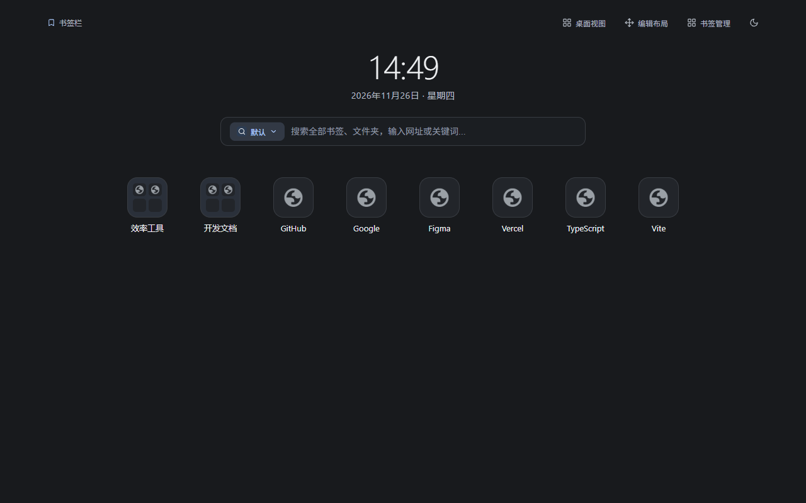
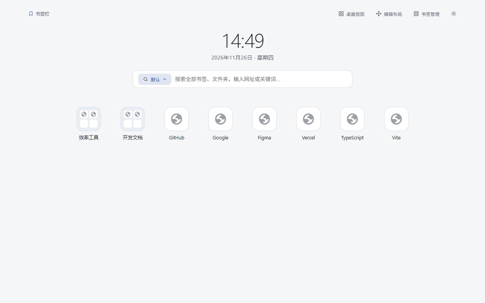
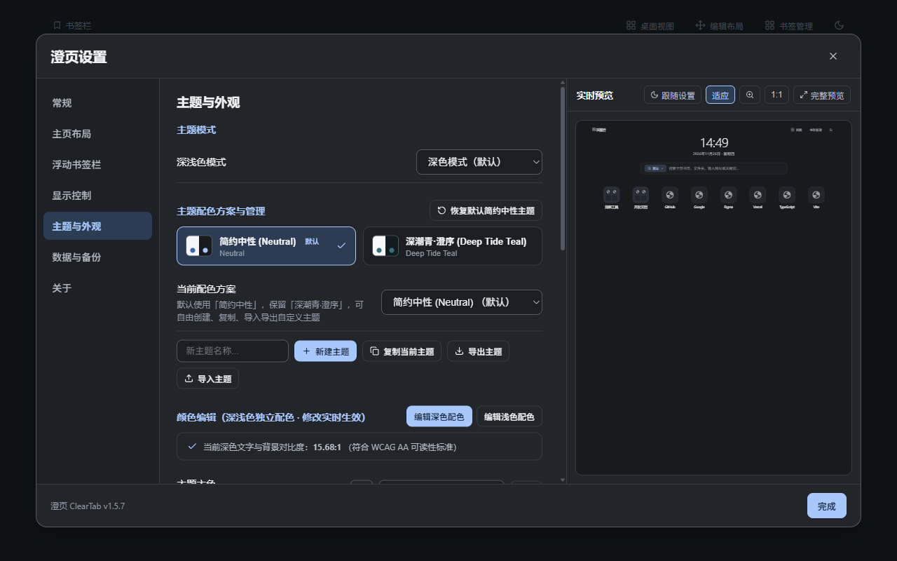
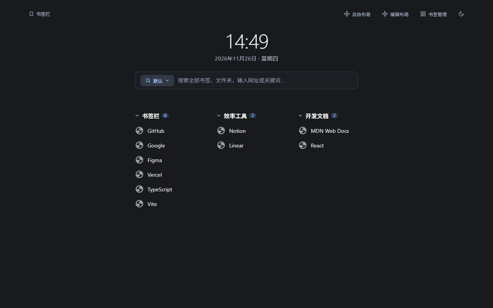

Chrome 原生书签唯一数据源
直接读写 chrome.bookmarks，无需额外账号或导入导出即可使用；跨标签页与书签管理器实时同步变更。
让书签井然有序，让浏览回归清晰。
以 Chrome 原生书签作为唯一数据源的极简桌面式新标签页扩展，提供桌面文件夹、展开分组、瀑布流看板与自由布局四种模式，以及可选的网页顶部自动隐藏浮动书签栏。
直接读写 chrome.bookmarks，无需额外账号或导入导出即可使用；跨标签页与书签管理器实时同步变更。
支持桌面文件夹、展开分组、纵向瀑布流看板与自由布局模式；支持直接在主页拖拽位置、调节宽高并独立持久化。
默认关闭；仅在主动开启并授权后，在普通网页顶部悬停呼出（Shadow DOM 隔离、零布局位移），随时可撤销权限。
新标签页默认通过 chrome.search.query() 调用您的 Chrome 默认搜索引擎，同时支持按需临时切换其他引擎或本地检索书签。
默认提供「简约中性 (Neutral)」浅色灰白与深色石墨灰双套配色，同时保留「深潮青·澄序」与全套实时预览自定义主题引擎。
无新闻资讯、无热搜推荐、无统计追踪或远程脚本；网站图标通过 Chrome 原生 /_favicon/ 本地缓存读取。



